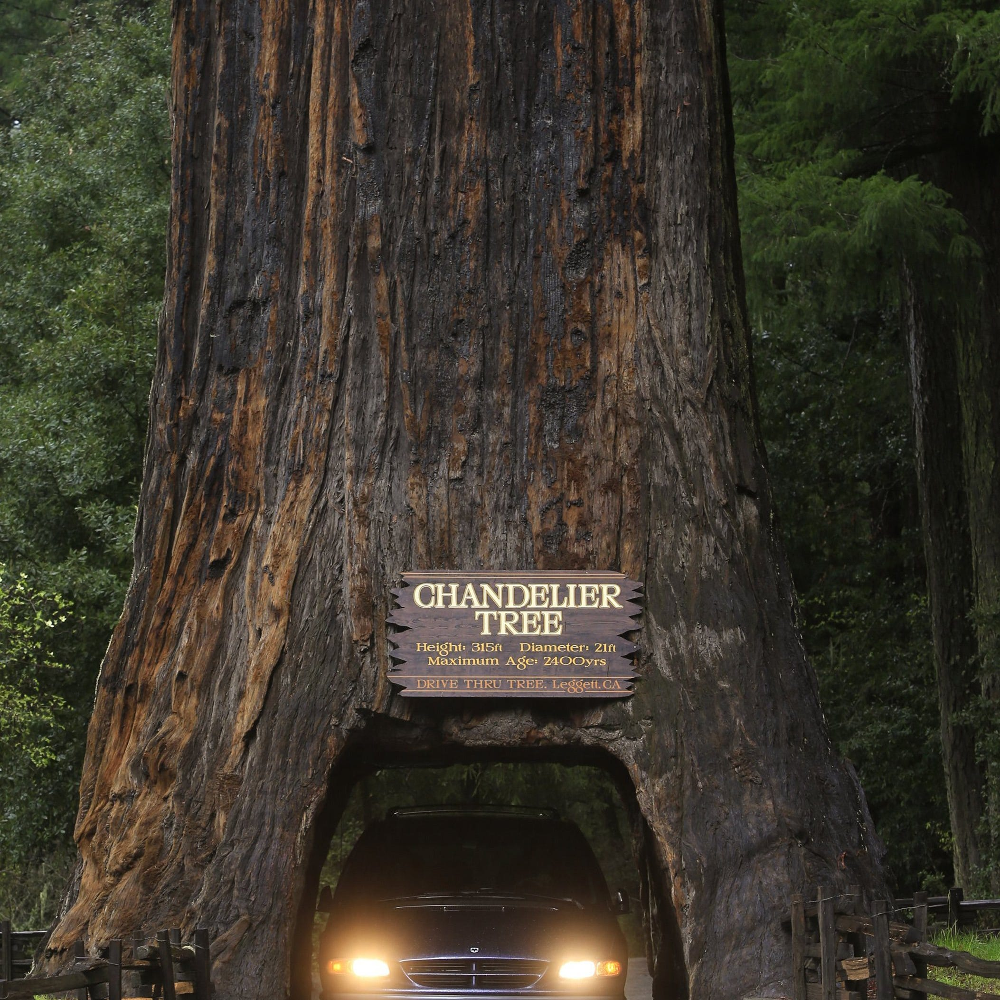

Education, Enforcement and Regulation
Redwood Forest Poaching and Prevention. Redwood forest poaching is a harmful and illegal act that threatens one of the world’s most iconic ecosystems. Poachers often target redwood burls—rounded growths on the trees that are highly valued for their unique wood grain. To remove them, poachers use chainsaws and heavy equipment, leaving deep scars that weaken or kill the trees. This damages the forest, disrupts wildlife habitats, and threatens biodiversity. Poaching usually occurs in remote areas of protected lands, such as state and national parks. Poachers operate at night to avoid detection, making enforcement difficult. The damage they cause is lasting and expensive to repair. However, communities, politicians, and educators can play powerful roles in stopping this crime. Local communities can help by reporting suspicious activity and supporting park rangers and conservation efforts. Politicians can strengthen laws to increase penalties for poaching and fund more park staff and surveillance programs. Education is also key. When people understand the importance of redwood forests and the damage caused by poaching, they are more likely to protect these natural treasures. Schools, public campaigns, and community events can raise awareness and inspire action. By working together—citizens, leaders, and educators—we can protect the redwoods, preserve their ecosystems, and ensure they thrive for future generations. How to Report Poaching: RNSP Tip Hotline: 707-465-7353 CALTIP (Californians Turn In Poachers and Polluters): 1-888-334-2258 (24/7)
